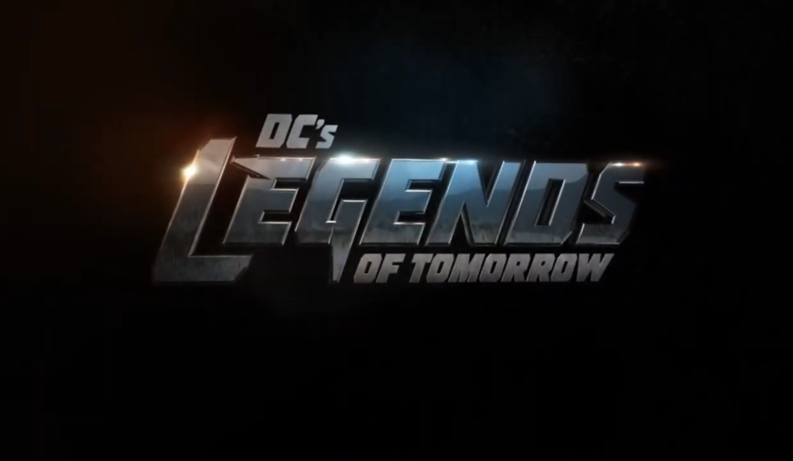
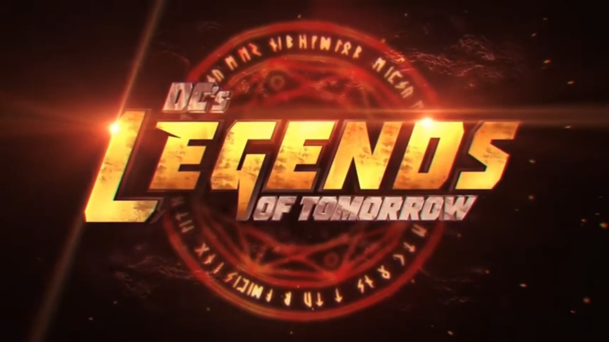
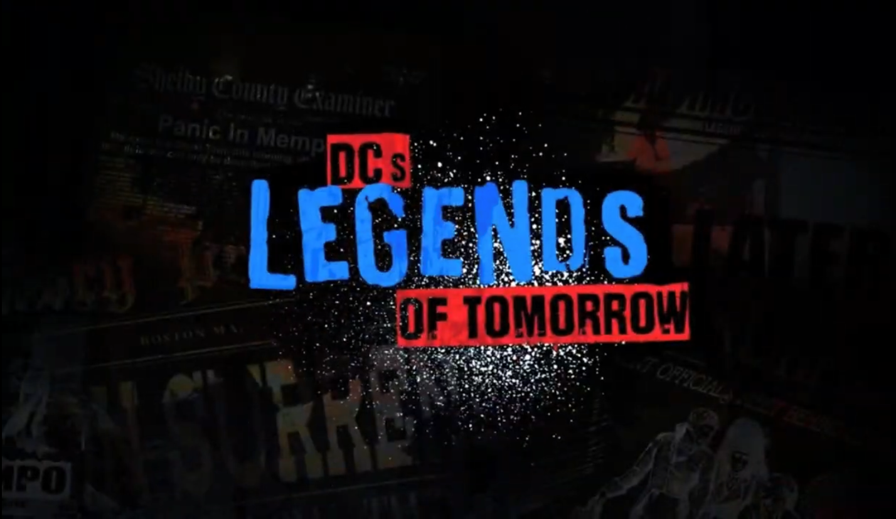
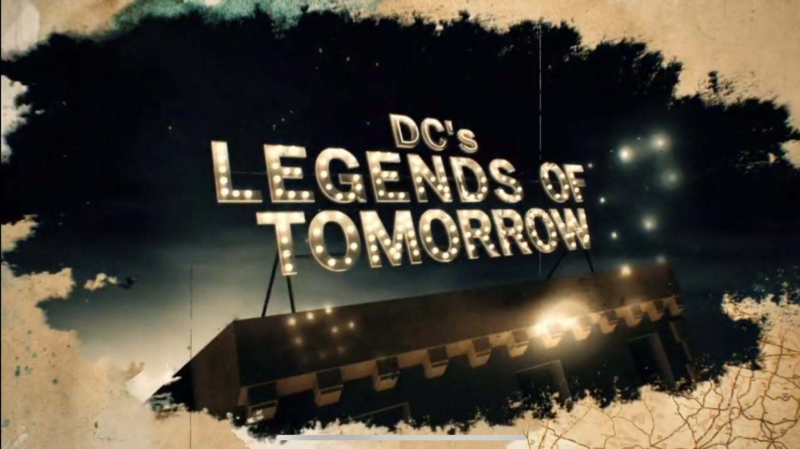

"We are legends"
- Sara Lance 2x02 intro variant
With the debut of "DC's Legends of Tomorrow," "Arrow" and "The Flash"
now have some new superhero company on the CW. After witnessing the future's tragedy,
time-traveling outlaw, Rip Hunter understands that heroes alone will not suffice to
avert the imminent disaster that threatens the Earth. Rip, tasked with recruiting both
heroes and villains, assembles a motley crew of divergent abilities. Despite the fact
that the team constantly gains and loses members, its purpose remains the same: to keep
villains from destroying time itself.
Every season except season 1 & 6 have variations in there title cards.
It could be based on the episode theme or a change in characters

Season 1-3

Season 4

Season 5-6

Season 7